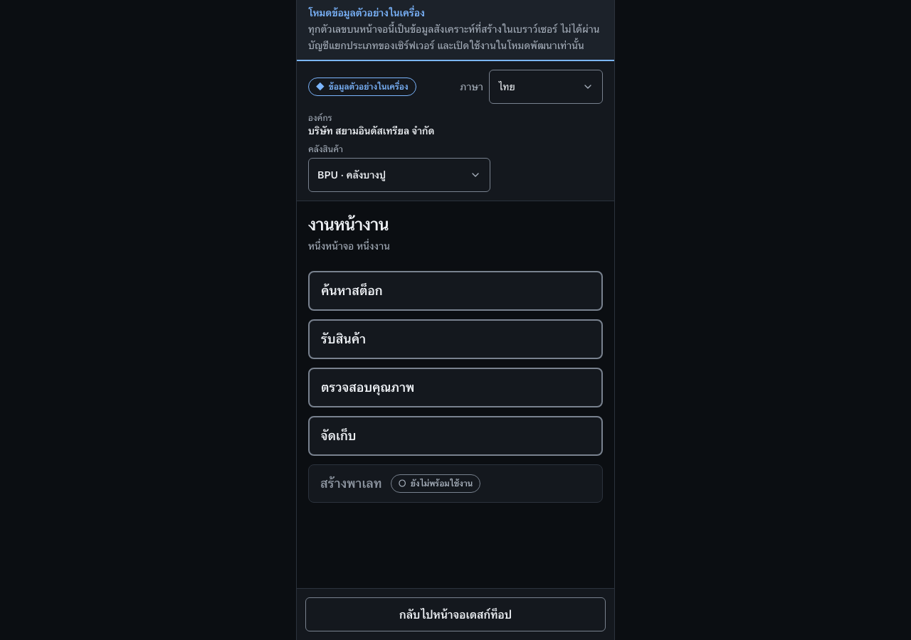

ใช้งานบนเครื่องพกพาWork on the handheld
ตรวจบริบทบนเครื่องพกพา แล้วทำงานหนึ่งงานต่อครั้งตามลำดับที่หน้าจอแสดงCheck the context on the handheld, then do one task at a time in the order the screen presents.
สิ่งที่ต้องมีก่อนเริ่มBefore you start
- เข้าสู่ระบบบนเครื่องพกพาแล้วSigned in on the handheld device
- เลือกองค์กรและคลังสินค้าที่ถูกต้องแล้วThe correct organization and warehouse are selected

ขั้นตอนSteps
- ที่กรอบ 1 ตรวจสอบภาษา องค์กร และคลังสินค้าก่อนเริ่มงานIn box 1, check the language, organization, and warehouse before starting.
- ที่กรอบ 2 เลือกหนึ่งงานต่อครั้ง: ค้นหาสต็อก รับสินค้า ตรวจสอบคุณภาพ หรือจัดเก็บIn box 2, choose one task at a time: stock lookup, receive, quality, or putaway.
- ทำตามลำดับที่หน้าจอแสดง ปุ่มขั้นถัดไปจะพร้อมเมื่อข้อมูลของขั้นปัจจุบันครบFollow the order on screen: the next-step button becomes available once the current step is complete.
- ใช้ “กลับไปหน้าจอเดสก์ท็อป” เมื่อต้องกลับไปงานของหัวหน้างานUse “Back to desktop” to return to supervisor work.
ตรวจว่างานสำเร็จอย่างไรHow to tell it worked
- งานที่เลือกเปิดขึ้นโดยแสดงองค์กรและคลังสินค้าที่ถูกต้องThe chosen task opens showing the correct organization and warehouse.
- งานที่ยังไม่มีในระบบจะแสดงว่ายังไม่พร้อมใช้งาน ไม่ใช่ซ่อนไว้A task that does not exist yet is shown as unavailable rather than hidden.